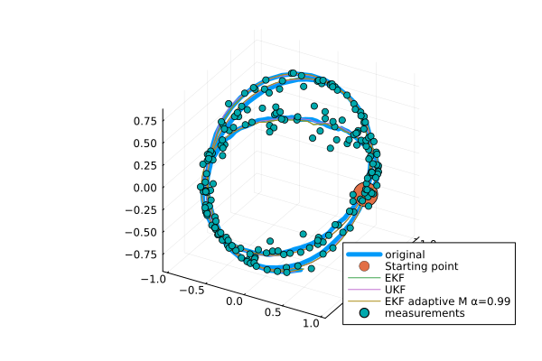

GeometricKalman
Kalman filters on manifolds with an affine connection, unifying the Lie group and Riemannian approaches.

arXiv preprint: https://arxiv.org/abs/2506.01086.
Getting started
Basic setting (example: a car driving on a sphere)
using Manifolds
using RecursiveArrayTools
using LinearAlgebra
using Distributions
using GeometricKalman
using GeometricKalman: gen_car_sphere_data, car_sphere_f, car_sphere_h
M = TangentBundle(Manifolds.Sphere(2)) # state manifold
M_obs = Manifolds.Sphere(2) # observation manifold
retraction = Manifolds.FiberBundleProductRetraction()
inverse_retraction = Manifolds.FiberBundleInverseProductRetraction()Manifolds.FiberBundleInverseProductRetraction()Generating data using the gen_car_sphere_data function.
dt = 0.01
vt = 5
times, samples, controls, measurements = gen_car_sphere_data(;
vt = vt,
N = 200,
noise_f_distr = MvNormal(
[0.0, 0.0, 0.0, 0.0],
1e4 * diagm([1e-3, 1e-3, 1e-2, 1e-2]),
),
noise_h_distr = MvNormal([0.0, 0.0], diagm([0.01, 0.01])),
retraction = retraction,
)([0.0, 0.01, 0.02, 0.03, 0.04, 0.05, 0.06, 0.07, 0.08, 0.09 … 1.91, 1.92, 1.93, 1.94, 1.95, 1.96, 1.97, 1.98, 1.99, 2.0], RecursiveArrayTools.ArrayPartition{Float64, Tuple{Vector{Float64}, Vector{Float64}}}[RecursiveArrayTools.ArrayPartition{Float64, Tuple{Vector{Float64}, Vector{Float64}}}(([1.0, 0.0, 0.0], [0.0, 1.0, 0.0])), RecursiveArrayTools.ArrayPartition{Float64, Tuple{Vector{Float64}, Vector{Float64}}}(([0.9981970258388785, 0.05957534083580685, -0.007312753976095341], [-0.059542814300224005, 0.9977270283774123, 0.0006109370198201913])), RecursiveArrayTools.ArrayPartition{Float64, Tuple{Vector{Float64}, Vector{Float64}}}(([0.9939042139179859, 0.10993101442307898, 0.008341799804807714], [-0.10984726825839616, 0.9933799656211244, -0.0030694238046091527])), RecursiveArrayTools.ArrayPartition{Float64, Tuple{Vector{Float64}, Vector{Float64}}}(([0.9875254799815883, 0.15745827391724004, 0.0005642358879186784], [-0.15729830251264132, 0.9865214093240797, 0.00021869313033372496])), RecursiveArrayTools.ArrayPartition{Float64, Tuple{Vector{Float64}, Vector{Float64}}}(([0.9803551339257152, 0.19715398992916972, -0.005840859568791338], [-0.19655721403806106, 0.9772813838883887, -0.003586762360170721])), RecursiveArrayTools.ArrayPartition{Float64, Tuple{Vector{Float64}, Vector{Float64}}}(([0.9678025424400435, 0.25157279887588085, -0.008328608067600609], [-0.25096385757609885, 0.9653933951979455, -0.0020100569431329143])), RecursiveArrayTools.ArrayPartition{Float64, Tuple{Vector{Float64}, Vector{Float64}}}(([0.9494468171890806, 0.3137717368770873, -0.009901437605746601], [-0.31292692560945895, 0.9469158711086757, 0.0008043298257744545])), RecursiveArrayTools.ArrayPartition{Float64, Tuple{Vector{Float64}, Vector{Float64}}}(([0.9372595343402077, 0.3486237134433803, 0.002464084682974786], [-0.347189886710242, 0.9333693715164462, 0.005006010296082009])), RecursiveArrayTools.ArrayPartition{Float64, Tuple{Vector{Float64}, Vector{Float64}}}(([0.9178778729043561, 0.39663211365608514, 0.013534284217531984], [-0.3945357632298803, 0.9129580193756011, 0.002008102791741448])), RecursiveArrayTools.ArrayPartition{Float64, Tuple{Vector{Float64}, Vector{Float64}}}(([0.8919248195894839, 0.45200288563060903, 0.012787008323643904], [-0.44941967416413087, 0.8866564318444041, 0.006044888705829985])) … RecursiveArrayTools.ArrayPartition{Float64, Tuple{Vector{Float64}, Vector{Float64}}}(([-0.9456567867958516, -0.1970830107917453, -0.2586339661456048], [1.147187441824748, -1.7616273720564957, -2.852134136531842])), RecursiveArrayTools.ArrayPartition{Float64, Tuple{Vector{Float64}, Vector{Float64}}}(([-0.872718778260708, -0.28651485449958636, -0.3953114875920229], [1.7423714858983639, -1.6033793280458488, -2.6844864186239445])), RecursiveArrayTools.ArrayPartition{Float64, Tuple{Vector{Float64}, Vector{Float64}}}(([-0.7671510138318595, -0.35720618993563136, -0.5328067753401978], [2.3188013131166603, -1.3833013038506081, -2.4112812550672125])), RecursiveArrayTools.ArrayPartition{Float64, Tuple{Vector{Float64}, Vector{Float64}}}(([-0.635183342935725, -0.4201064568684714, -0.6481147165081322], [2.8202764266154356, -1.1201805328827827, -2.037907025247155])), RecursiveArrayTools.ArrayPartition{Float64, Tuple{Vector{Float64}, Vector{Float64}}}(([-0.47579289850278017, -0.4732686974246665, -0.7413756522656263], [3.242425337866048, -0.8017292866046779, -1.5690960054711198])), RecursiveArrayTools.ArrayPartition{Float64, Tuple{Vector{Float64}, Vector{Float64}}}(([-0.30245517231193586, -0.5085928384150264, -0.8061353443775456], [3.546591019125633, -0.45742159052756426, -1.042062550153429])), RecursiveArrayTools.ArrayPartition{Float64, Tuple{Vector{Float64}, Vector{Float64}}}(([-0.1214666626102425, -0.5250430366767672, -0.8423631399293113], [3.727682887054752, -0.09607017583990618, -0.47764224671151057])), RecursiveArrayTools.ArrayPartition{Float64, Tuple{Vector{Float64}, Vector{Float64}}}(([0.06720107452492248, -0.5148678511276955, -0.8546315647446243], [3.7824071268871116, 0.2788338863063289, 0.12943497984007818])), RecursiveArrayTools.ArrayPartition{Float64, Tuple{Vector{Float64}, Vector{Float64}}}(([0.252350392060526, -0.488169942942075, -0.835469560447794], [3.7007378707271457, 0.641207526038596, 0.7431322942013241])), RecursiveArrayTools.ArrayPartition{Float64, Tuple{Vector{Float64}, Vector{Float64}}}(([0.4211314657825141, -0.44112719575242787, -0.7924992654226692], [3.500822875261791, 0.9664374924068788, 1.3223795323640708]))], Any[0.0, 0.004999979166692708, 0.009999833334166664, 0.01499943750632809, 0.01999866669333308, 0.024997395914712332, 0.02999550020249566, 0.034992854604336196, 0.03998933418663416, 0.044984814037660234 … 0.8163137404456835, 0.8191915683009983, 0.8220489164097717, 0.8248857133384501, 0.8277018881672576, 0.8304973704919705, 0.8332720904256761, 0.8360259786005205, 0.838758966169443, 0.8414709848078965], [[0.996753568627033, 0.05992509821226847, -0.0537708660291468], [0.9779956747516901, 0.10140336453970789, -0.18232338804172551], [0.9944877094011454, 0.10418302732007195, -0.011836074876755307], [0.9714656743625991, 0.2161699375527746, -0.09759611484915846], [0.9859077607067541, 0.1562137107347112, -0.059859535219428994], [0.9804419352952437, 0.12418355352796662, 0.15268286265224443], [0.9270027329112986, 0.3659621305715153, -0.08208320268203914], [0.9701122857982215, 0.17664727333832947, 0.16636674477035118], [0.8902697599867981, 0.4498124953986637, 0.07133353654681476], [0.9033011820814395, 0.42787744613988626, 0.03111053736409106] … [-0.9063906515300386, -0.29283064948082865, -0.30447692448457886], [-0.9039137385607409, -0.2984004933379108, -0.3064263350576055], [-0.7401219033386106, -0.34726499656532744, -0.5758702895261358], [-0.6598193974191218, -0.5010237906679651, -0.5600120748467575], [-0.5641305852092432, -0.3752414616668978, -0.7354933910495506], [-0.5005886535493083, -0.39730453441438696, -0.7691294474088598], [-0.10956018372448495, -0.5201433792006342, -0.8470226863644222], [0.1719993728672734, -0.5290725473916881, -0.8309623669756258], [0.4166255638579049, -0.20293315593670008, -0.8861384055336129], [0.2332343342003166, -0.429287752492857, -0.8725329626494157]])Setting initial conditions for filters
p0 = ArrayPartition([1.0, 0.0, 0.0], [0.0, 1.0, 0.0])
P0 = diagm([0.1, 0.1, 0.1, 0.1])
Q = diagm([0.1, 0.1, 0.01, 0.01])
R = diagm([0.01, 0.01])2×2 Matrix{Float64}:
0.01 0.0
0.0 0.01Adapting system dynamics to the interface expected by Kalman filters.
car_f_adapted(p, q, noise, t::Real) = car_sphere_f(p, q, noise, t::Real; vt = vt)
f_tilde = GeometricKalman.default_discretization(
M,
car_f_adapted;
dt = dt,
retraction = retraction,
)(::GeometricKalman.var"#tilde_f#27"{Float64, Manifolds.FiberBundleProductRetraction, FiberBundle{ℝ, TangentSpaceType, Sphere{ManifoldsBase.TypeParameter{Tuple{2}}, ℝ}, Manifolds.FiberBundleProductVectorTransport{ParallelTransport, ParallelTransport}}, typeof(Main.car_f_adapted)}) (generic function with 1 method)Filter-specific settings
sp = WanMerweSigmaPoints(; α = 1.0)
filter_params = [
( # extended Kalman filter
"EKF",
(;
propagator = EKFPropagator(M, f_tilde; B_M = DefaultOrthonormalBasis()),
updater = EKFUpdater(
M,
M_obs,
car_sphere_h;
B_M = DefaultOrthonormalBasis(),
B_M_obs = DefaultOrthonormalBasis(),
),
),
),
( # unscented Kalman filter
"UKF",
(;
propagator = UnscentedPropagator(
M;
sigma_points = sp,
inverse_retraction_method = inverse_retraction,
),
updater = UnscentedUpdater(; sigma_points = sp),
),
),
( # adaptive extended Kalman filter
"EKF adaptive M α=0.99",
(;
propagator = EKFPropagator(M, f_tilde; B_M = DefaultOrthonormalBasis()),
updater = EKFUpdater(
M,
M_obs,
car_sphere_h;
B_M = DefaultOrthonormalBasis(),
B_M_obs = DefaultOrthonormalBasis(),
),
measurement_covariance_adapter = CovarianceMatchingMeasurementCovarianceAdapter(
0.99,
),
),
),
]3-element Vector{Tuple{String, NamedTuple}}:
("EKF", (propagator = EKFPropagator{GeometricKalman.var"#jacobian_p#3"{DefaultOrthonormalBasis{ℝ, TangentSpaceType}, DefaultOrthonormalBasis{ℝ, TangentSpaceType}, Manifolds.FiberBundleProductRetraction, Manifolds.FiberBundleInverseProductRetraction, FiberBundle{ℝ, TangentSpaceType, Sphere{ManifoldsBase.TypeParameter{Tuple{2}}, ℝ}, Manifolds.FiberBundleProductVectorTransport{ParallelTransport, ParallelTransport}}, FiberBundle{ℝ, TangentSpaceType, Sphere{ManifoldsBase.TypeParameter{Tuple{2}}, ℝ}, Manifolds.FiberBundleProductVectorTransport{ParallelTransport, ParallelTransport}}, GeometricKalman.var"#tilde_f#27"{Float64, Manifolds.FiberBundleProductRetraction, FiberBundle{ℝ, TangentSpaceType, Sphere{ManifoldsBase.TypeParameter{Tuple{2}}, ℝ}, Manifolds.FiberBundleProductVectorTransport{ParallelTransport, ParallelTransport}}, typeof(Main.car_f_adapted)}}}(GeometricKalman.var"#jacobian_p#3"{DefaultOrthonormalBasis{ℝ, TangentSpaceType}, DefaultOrthonormalBasis{ℝ, TangentSpaceType}, Manifolds.FiberBundleProductRetraction, Manifolds.FiberBundleInverseProductRetraction, FiberBundle{ℝ, TangentSpaceType, Sphere{ManifoldsBase.TypeParameter{Tuple{2}}, ℝ}, Manifolds.FiberBundleProductVectorTransport{ParallelTransport, ParallelTransport}}, FiberBundle{ℝ, TangentSpaceType, Sphere{ManifoldsBase.TypeParameter{Tuple{2}}, ℝ}, Manifolds.FiberBundleProductVectorTransport{ParallelTransport, ParallelTransport}}, GeometricKalman.var"#tilde_f#27"{Float64, Manifolds.FiberBundleProductRetraction, FiberBundle{ℝ, TangentSpaceType, Sphere{ManifoldsBase.TypeParameter{Tuple{2}}, ℝ}, Manifolds.FiberBundleProductVectorTransport{ParallelTransport, ParallelTransport}}, typeof(Main.car_f_adapted)}}(DefaultOrthonormalBasis(ℝ), DefaultOrthonormalBasis(ℝ), Manifolds.FiberBundleProductRetraction(), Manifolds.FiberBundleInverseProductRetraction(), TangentBundle(Sphere(2, ℝ)), TangentBundle(Sphere(2, ℝ)), GeometricKalman.var"#tilde_f#27"{Float64, Manifolds.FiberBundleProductRetraction, FiberBundle{ℝ, TangentSpaceType, Sphere{ManifoldsBase.TypeParameter{Tuple{2}}, ℝ}, Manifolds.FiberBundleProductVectorTransport{ParallelTransport, ParallelTransport}}, typeof(Main.car_f_adapted)}(0.01, Manifolds.FiberBundleProductRetraction(), TangentBundle(Sphere(2, ℝ)), Main.car_f_adapted))), updater = EKFUpdater{GeometricKalman.var"#jacobian_p#3"{DefaultOrthonormalBasis{ℝ, TangentSpaceType}, DefaultOrthonormalBasis{ℝ, TangentSpaceType}, Manifolds.FiberBundleProductRetraction, LogarithmicInverseRetraction, FiberBundle{ℝ, TangentSpaceType, Sphere{ManifoldsBase.TypeParameter{Tuple{2}}, ℝ}, Manifolds.FiberBundleProductVectorTransport{ParallelTransport, ParallelTransport}}, Sphere{ManifoldsBase.TypeParameter{Tuple{2}}, ℝ}, typeof(GeometricKalman.car_sphere_h)}}(GeometricKalman.var"#jacobian_p#3"{DefaultOrthonormalBasis{ℝ, TangentSpaceType}, DefaultOrthonormalBasis{ℝ, TangentSpaceType}, Manifolds.FiberBundleProductRetraction, LogarithmicInverseRetraction, FiberBundle{ℝ, TangentSpaceType, Sphere{ManifoldsBase.TypeParameter{Tuple{2}}, ℝ}, Manifolds.FiberBundleProductVectorTransport{ParallelTransport, ParallelTransport}}, Sphere{ManifoldsBase.TypeParameter{Tuple{2}}, ℝ}, typeof(GeometricKalman.car_sphere_h)}(DefaultOrthonormalBasis(ℝ), DefaultOrthonormalBasis(ℝ), Manifolds.FiberBundleProductRetraction(), LogarithmicInverseRetraction(), TangentBundle(Sphere(2, ℝ)), Sphere(2, ℝ), GeometricKalman.car_sphere_h))))
("UKF", (propagator = UnscentedPropagator{WanMerweSigmaPoints{Float64}, Manifolds.FiberBundleInverseProductRetraction, GradientDescentEstimation}(WanMerweSigmaPoints{Float64}(1.0, 2.0, 0.0), Manifolds.FiberBundleInverseProductRetraction(), GradientDescentEstimation()), updater = UnscentedUpdater{WanMerweSigmaPoints{Float64}, LogarithmicInverseRetraction}(WanMerweSigmaPoints{Float64}(1.0, 2.0, 0.0), LogarithmicInverseRetraction())))
("EKF adaptive M α=0.99", (propagator = EKFPropagator{GeometricKalman.var"#jacobian_p#3"{DefaultOrthonormalBasis{ℝ, TangentSpaceType}, DefaultOrthonormalBasis{ℝ, TangentSpaceType}, Manifolds.FiberBundleProductRetraction, Manifolds.FiberBundleInverseProductRetraction, FiberBundle{ℝ, TangentSpaceType, Sphere{ManifoldsBase.TypeParameter{Tuple{2}}, ℝ}, Manifolds.FiberBundleProductVectorTransport{ParallelTransport, ParallelTransport}}, FiberBundle{ℝ, TangentSpaceType, Sphere{ManifoldsBase.TypeParameter{Tuple{2}}, ℝ}, Manifolds.FiberBundleProductVectorTransport{ParallelTransport, ParallelTransport}}, GeometricKalman.var"#tilde_f#27"{Float64, Manifolds.FiberBundleProductRetraction, FiberBundle{ℝ, TangentSpaceType, Sphere{ManifoldsBase.TypeParameter{Tuple{2}}, ℝ}, Manifolds.FiberBundleProductVectorTransport{ParallelTransport, ParallelTransport}}, typeof(Main.car_f_adapted)}}}(GeometricKalman.var"#jacobian_p#3"{DefaultOrthonormalBasis{ℝ, TangentSpaceType}, DefaultOrthonormalBasis{ℝ, TangentSpaceType}, Manifolds.FiberBundleProductRetraction, Manifolds.FiberBundleInverseProductRetraction, FiberBundle{ℝ, TangentSpaceType, Sphere{ManifoldsBase.TypeParameter{Tuple{2}}, ℝ}, Manifolds.FiberBundleProductVectorTransport{ParallelTransport, ParallelTransport}}, FiberBundle{ℝ, TangentSpaceType, Sphere{ManifoldsBase.TypeParameter{Tuple{2}}, ℝ}, Manifolds.FiberBundleProductVectorTransport{ParallelTransport, ParallelTransport}}, GeometricKalman.var"#tilde_f#27"{Float64, Manifolds.FiberBundleProductRetraction, FiberBundle{ℝ, TangentSpaceType, Sphere{ManifoldsBase.TypeParameter{Tuple{2}}, ℝ}, Manifolds.FiberBundleProductVectorTransport{ParallelTransport, ParallelTransport}}, typeof(Main.car_f_adapted)}}(DefaultOrthonormalBasis(ℝ), DefaultOrthonormalBasis(ℝ), Manifolds.FiberBundleProductRetraction(), Manifolds.FiberBundleInverseProductRetraction(), TangentBundle(Sphere(2, ℝ)), TangentBundle(Sphere(2, ℝ)), GeometricKalman.var"#tilde_f#27"{Float64, Manifolds.FiberBundleProductRetraction, FiberBundle{ℝ, TangentSpaceType, Sphere{ManifoldsBase.TypeParameter{Tuple{2}}, ℝ}, Manifolds.FiberBundleProductVectorTransport{ParallelTransport, ParallelTransport}}, typeof(Main.car_f_adapted)}(0.01, Manifolds.FiberBundleProductRetraction(), TangentBundle(Sphere(2, ℝ)), Main.car_f_adapted))), updater = EKFUpdater{GeometricKalman.var"#jacobian_p#3"{DefaultOrthonormalBasis{ℝ, TangentSpaceType}, DefaultOrthonormalBasis{ℝ, TangentSpaceType}, Manifolds.FiberBundleProductRetraction, LogarithmicInverseRetraction, FiberBundle{ℝ, TangentSpaceType, Sphere{ManifoldsBase.TypeParameter{Tuple{2}}, ℝ}, Manifolds.FiberBundleProductVectorTransport{ParallelTransport, ParallelTransport}}, Sphere{ManifoldsBase.TypeParameter{Tuple{2}}, ℝ}, typeof(GeometricKalman.car_sphere_h)}}(GeometricKalman.var"#jacobian_p#3"{DefaultOrthonormalBasis{ℝ, TangentSpaceType}, DefaultOrthonormalBasis{ℝ, TangentSpaceType}, Manifolds.FiberBundleProductRetraction, LogarithmicInverseRetraction, FiberBundle{ℝ, TangentSpaceType, Sphere{ManifoldsBase.TypeParameter{Tuple{2}}, ℝ}, Manifolds.FiberBundleProductVectorTransport{ParallelTransport, ParallelTransport}}, Sphere{ManifoldsBase.TypeParameter{Tuple{2}}, ℝ}, typeof(GeometricKalman.car_sphere_h)}(DefaultOrthonormalBasis(ℝ), DefaultOrthonormalBasis(ℝ), Manifolds.FiberBundleProductRetraction(), LogarithmicInverseRetraction(), TangentBundle(Sphere(2, ℝ)), Sphere(2, ℝ), GeometricKalman.car_sphere_h)), measurement_covariance_adapter = CovarianceMatchingMeasurementCovarianceAdapter{Float64}(0.99)))Running the filters. Results will be saved in reconstructions.
reconstructions = NamedTuple[]
for (name, filter_kwargs) in filter_params
kf = discrete_kalman_filter_manifold(
M,
M_obs,
p0,
f_tilde,
car_sphere_h,
P0,
copy(Q),
copy(R);
filter_kwargs...,
)
samples_kalman = []
for i in eachindex(samples)
GeometricKalman.update!(kf, controls[i], measurements[i])
push!(samples_kalman, kf.p_n)
predict!(kf, controls[i])
end
push!(reconstructions, (; data = samples_kalman, label = name))
end┌ Warning: SpecialOrthogonal will move to LieGroups.jl and be renamed to SpecialOrthogonalGroup.
│ caller = ip:0x0
└ @ Core :-1Plotting the estimated trajectory and measurements.
using Plots
function trajectory_plot3d(
p0,
samples::Vector,
reconstructions::Vector{<:NamedTuple},
measurements::Vector,
)
fig = plot(
[s.x[1][1] for s in samples],
[s.x[1][2] for s in samples],
[s.x[1][3] for s in samples];
label = "original",
linewidth = 5.0,
)
scatter3d!(map(v -> [v], p0.x[1])..., markersize = 15, label = "Starting point")
for rec in reconstructions
plot!(
[s.x[1][1] for s in rec.data],
[s.x[1][2] for s in rec.data],
[s.x[1][3] for s in rec.data];
label = rec.label,
)
end
scatter!(
[s[1] for s in measurements],
[s[2] for s in measurements],
[s[3] for s in measurements];
label = "measurements",
)
return fig
end
trajectory_plot3d(p0, samples, reconstructions, measurements)